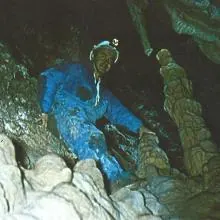
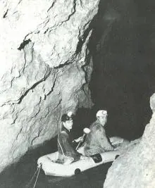
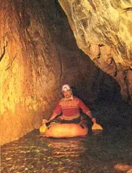

Dr. Temuçin Aygen (1921-2003)

1921 yılında İstanbul’da doğan ve 1938 yılında Boğaziçi Lisesi'ni bitiren Temuçin Aygen, 1945'te İsviçre’de Cenevre Üniversitesi, Jeoloji ve Mineraloji Bölümü'nden mezun olmuştur. 1947 yılında yurda dönen Aygen, 1950'ye kadar İstanbul Üniversitesi Jeoloji Bölümü'nde asistan olarak çalışmış, 1951'de İstanbul Üniversitesi'nden Ord. Prof. Hamit Nafiz Pamir nezdinde "Balya Bölgesi'nin Jeolojik İncelenmesi" konulu doktora teziyle doktor unvanını almıştır.1950–1951 yılları arasında MTA’da saha jeoloğu olarak çalışmalarına devam etmiş, 1952'den sonra İller Bankası'nın su mühendisliği bölümünde uzman olarak çalışmaya başlamıştır. Bu birimde çalışmalarını sürdürürken birçok ilde karstik alanlardan su temin edilmesi ve hidroelektrik santrallerin verimliliği üzerine incelemeler yapmıştır. Bu çalışmalar sırasında ilk mağaracılık tecrübelerini yaşamaya başlamış ve 1958'de hidrojeoloji üzerine araştırma yapmak için gittiği Fransa ve İsviçre’de speleoloji kulüpleriyle temasa geçmiştir.
Yurda döndükten sonra DSİ’de çalışmaya başlayan Aygen, 1959'da "Mağaralar ve Yeraltı Irmakları" isimli ilk kitabını yayımlamıştır.

1964 yılında Ankara’da Türkiye'deki ilk mağara araştırma derneğini kuran Aygen, aynı yıl Fransız mağaracıları Türkiye’ye davet etmiş, 1965'den itibaren özellikle Speleo Club de Paris üyesi araştırmacılarla birlikte Toroslar'da birçok mağarayı araştırmıştır.Dr. Temuçin Aygen 1963–1968 yılları arasında da DSİ Genel Müdürlüğü’nde müşavir ve uzman jeolog olarak çalışmış, 1968–1977 yılları arasında ise İller Bankası Genel Müdürlüğü'nde Jeoloji Fen Heyeti Müdürlüğü yapmıştır.
70'li yıllarda, Toroslarda sürdürdüğü mağara araştırmalarını Batı Karadeniz’e kaydırmış ve Avrupalı araştırmacılarla birlikte bu bölgede birçok mağara keşfetmiştir. 1970'te İspanya’dan gelen bir

grup ile Ayvaini, Çayırköy ve Ilıksu Mağarası’nı incelemiş, 1975'de ise İngiliz mağaracılarla birlikte Kızılelma, Cumayanı ve Gökgöl mağaralarını günışığına çıkarmıştır.1984 yılında ikinci kitabı "Türkiye’nin Mağaraları"nı yayımlamış, ardından 1988'de üçüncü kitabı olan "Türkiye’nin Bilinmeyen Doğal ve Arkeolojik Değerleri" basılmıştır. Aygen’in, bu eserlerinden başka, 80’den fazla yayımlanmış makalesi ve tebliği mevcuttur.
Dr. Temuçin Aygen, ömrünün son yıllarında Kaş’da denize karışan yeraltı kaynakları ile ilgili bilimsel araştırmalarını sürdürmüş ve yoğun bir şekilde konferans ve yayın faaliyetleriyle uğraştıktan sonra, uzun süre mücadele ettiği hastalığa yenilerek 25 Ocak 2003'te, 82 yaşında Antalya’da hayata gözlerini kapatmıştır.